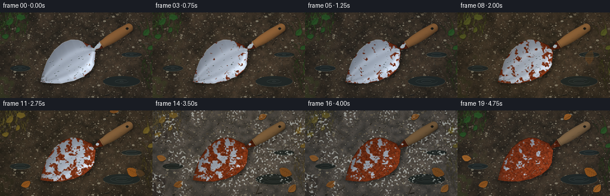
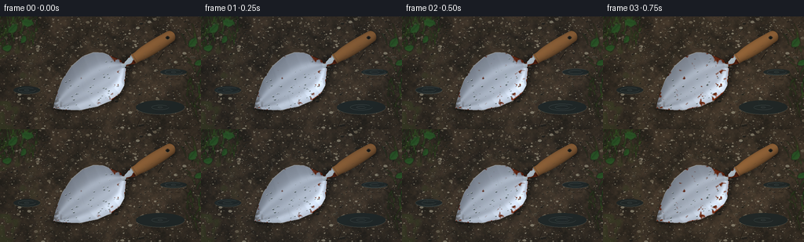
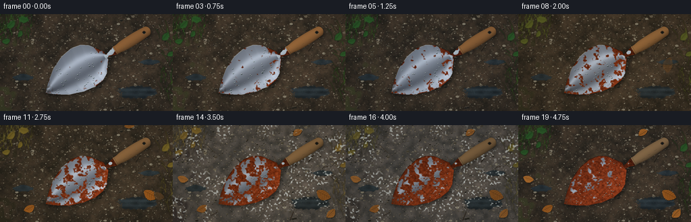

CODING AGENTS AS PIXEL WORLD MODELS
traex/GPT-6.1-Sol · material_0045
点击播放 · 原生 RGB 像素
逐轮保存的候选
回放视频、检查图与代码变化。
每份候选均可单独播放。实际图片检查记录在下方工具轨迹中。
候选 01播放与检查图
点击播放 · 原生 RGB 像素

展开代码变化
--- 上一保存版本
+++ 本次保存版本
@@ -0,0 +1,272 @@
+from pathlib import Path
+import math
+import numpy as np
+from PIL import Image, ImageDraw, ImageFilter
+import artifact_io
+
+ROOT=Path(__file__).resolve().parent
+W,H,S=256,144,3
+WW,HH=W*S,H*S
+rng=np.random.default_rng(1248)
+Y,X=np.mgrid[0:HH,0:WW].astype(float); X/=S; Y/=S
+
+def noise(w,h,seed):
+ r=np.random.default_rng(seed)
+ a=Image.fromarray(np.uint8(r.uniform(0,255,(h,w))))
+ return np.asarray(a.resize((WW,HH),Image.Resampling.BICUBIC),float)/255
+n1=noise(12,8,1); n2=noise(40,24,2); n3=noise(120,70,3); n4=noise(WW,HH,4)
+soil=.43*n1+.27*n2+.2*n3+.1*n4
+
+def smooth(a,b,x):
+ z=np.clip((x-a)/(b-a),0,1); return z*z*(3-2*z)
+def rgb(a):return Image.fromarray(np.uint8(np.clip(a,0,255)), 'RGB')
+def pp(points):return [(int(x*S),int(y*S)) for x,y in points]
+
+# Fixed stone chips, grit and garden debris.
+back=Image.new('RGBA',(WW,HH)); d=ImageDraw.Draw(back)
+for i in range(2400):
+ x,y=rng.uniform(0,256),rng.uniform(0,144); r=rng.choice([.14,.3,.55,.9,1.5,2.3],p=[.15,.33,.28,.17,.05,.02])
+ c=rng.choice([0,1,2,3]); cols=[(110,99,79),(68,61,48),(143,135,114),(33,31,25)]
+ col=cols[c]
+ d.ellipse((int((x-r)*S),int((y-r*.6)*S),int((x+r)*S),int((y+r*.65)*S)),fill=(*col,210))
+ if r>.7:
+ d.arc((int((x-r)*S),int((y-r*.6)*S),int((x+r)*S),int((y+r*.65)*S)),180,295,fill=(172,158,132,150),width=1)
+for i in range(24):
+ x,y=rng.uniform(0,256),rng.uniform(0,144); angle=rng.uniform(0,6.28); l=rng.uniform(4,18)
+ pts=[(x,y),(x+math.cos(angle)*l*.5,y+math.sin(angle)*l*.5),(x+math.cos(angle)*l,y+math.sin(angle)*l)]
+ d.line(pp(pts),fill=(32,27,21,210),width=rng.integers(2,5).item())
+ d.line(pp([(x-.3,y-.4) for x,y in pts]),fill=(112,85,52,140),width=1)
+
+# A gently concave steel blade. The projected mesh supplies stable texture
+# coordinates and surface normals to a hand-written rasterizer.
+profile_t=np.array([0,.05,.13,.26,.44,.62,.76,.86,.94,1])
+profile_w=np.array([.3,5.8,13,23,31,34,31.5,25,14,6])
+def width(t):return np.interp(t,profile_t,profile_w)
+def surf(t,u):
+ w=width(t); lat=u*w; lng=t*108
+ z=1.8+10*u*u*np.sin(np.pi*t*.85)+2.7*(2*t-1)**2
+ return np.array([68+.83*lng+.53*lat, 120-.49*lng+.84*lat-.68*z,z])
+nt,nu=130,74
+T,U=np.meshgrid(np.linspace(0,1,nt),np.linspace(-1,1,nu),indexing='ij')
+pos=surf(T,U).transpose(1,2,0)
+# surface normal with respect to ground coordinates (cross, length, up)
+w=width(T); wp=np.gradient(width(np.linspace(0,1,nt)),np.linspace(0,1,nt))[:,None]
+dzdu=20*U*np.sin(np.pi*T*.85)
+dzdt=10*U*U*np.pi*.85*np.cos(np.pi*T*.85)+10.8*(2*T-1)
+slopex=dzdu/np.maximum(w,.3)
+slopey=(dzdt-slopex*U*wp)/108
+normal=np.stack([-slopex,-slopey,np.ones_like(T)],-1); normal/=np.linalg.norm(normal,axis=-1,keepdims=True)
+attrs=np.concatenate([T[...,None],U[...,None],normal],-1)
+maps=np.zeros((HH,WW,5)); mask=np.zeros((HH,WW),bool)
+for i in range(nt-1):
+ for j in range(nu-1):
+ for inds in [((i,j),(i+1,j),(i,j+1)),((i+1,j),(i+1,j+1),(i,j+1))]:
+ p=np.array([pos[a,b,:2]*S for a,b in inds]); a=np.array([attrs[a,b] for a,b in inds])
+ lo=np.maximum(np.floor(p.min(0)).astype(int),[0,0]); hi=np.minimum(np.ceil(p.max(0)).astype(int),[WW-1,HH-1])
+ xx,yy=np.meshgrid(np.arange(lo[0],hi[0]+1)+.5,np.arange(lo[1],hi[1]+1)+.5)
+ den=(p[1,1]-p[2,1])*(p[0,0]-p[2,0])+(p[2,0]-p[1,0])*(p[0,1]-p[2,1])
+ if abs(den)<1e-9:continue
+ b0=((p[1,1]-p[2,1])*(xx-p[2,0])+(p[2,0]-p[1,0])*(yy-p[2,1]))/den
+ b1=((p[2,1]-p[0,1])*(xx-p[2,0])+(p[0,0]-p[2,0])*(yy-p[2,1]))/den; b2=1-b0-b1
+ good=(b0>=-1e-5)&(b1>=-1e-5)&(b2>=-1e-5)
+ sl=np.s_[lo[1]:hi[1]+1,lo[0]:hi[0]+1]
+ vals=b0[...,None]*a[0]+b1[...,None]*a[1]+b2[...,None]*a[2]
+ maps[sl][good]=vals[good]; mask[sl][good]=True
+bt,bu=maps[...,0],maps[...,1]
+N=maps[...,2:]; N/=np.maximum(np.linalg.norm(N,axis=-1,keepdims=True),1e-8)
+# More reflective at the curled side, with a luminous soft sky reflection.
+light=np.array([-.48,-.34,.81]); ndl=np.maximum(0,N@light)
+half=np.array([-.29,-.16,.943]); spec=np.maximum(0,N@half)**28
+silver=(86+100*ndl+65*spec + 26*np.exp(-((bu+.43)/.16)**2)-33*np.exp(-((bu-.32)/.18)**2))
+brushed=2.2*np.sin(bt*3300+noise(100,8,44)*3)+2*(n4-.5)
+silver+=brushed
+metal=np.stack([silver*.94,silver*.985,silver*1.035+3],-1)
+# Multi-scale, persistent corrosion nucleates and expands in-place.
+corrosion=.49*n2+.29*n3+.14*n1+.08*n4
+corrosion+=.08*(1-np.abs(bu))+.035*np.sin(bt*35+bu*8)
+# local staining from the collar and rolled rim
+corrosion-=.13*smooth(.88,.98,np.abs(bu))+.10*smooth(.78,1,bt)
+pit=noise(WW//2,HH//2,88)
+rustnoise=.45*n3+.32*n4+.23*n2
+rustbase=np.stack([83+105*rustnoise,32+50*rustnoise,14+25*rustnoise],-1)
+rustbase*= (.62+.43*ndl)[...,None]
+rustbase+=np.maximum(0,(pit-.68))*18[...,None] if False else 0
+# Fine iron oxide granules and darker pores.
+rustbase-=((pit>.73)*15+(n4<.14)*11)[...,None]
+
+# Tool contact shadow, including wooden grip.
+shadow=Image.new('L',(WW,HH)); sd=ImageDraw.Draw(shadow)
+sil=Image.fromarray(np.uint8(mask)*155)
+shadow.paste(sil,(int(2*S),int(3.0*S)))
+sd.line(pp([(155,66),(175,54),(222,24)]),fill=125,width=19*S)
+shadow=shadow.filter(ImageFilter.GaussianBlur(2.5*S))
+shadowarr=np.asarray(shadow,float)/255
+
+# Cylindrical shaped handle and socket using analytic local coordinates.
+h0=np.array([170.5,54.0]); h1=np.array([220.5,23.0]); hv=h1-h0; length=np.linalg.norm(hv); axis=hv/length; cross=np.array([-axis[1],axis[0]])
+ht=((X-h0[0])*axis[0]+(Y-h0[1])*axis[1])/length
+hc=(X-h0[0])*cross[0]+(Y-h0[1])*cross[1]
+hr=7.2+1.4*np.sin(np.pi*np.clip(ht,0,1))-.85*np.exp(-((ht-.08)/.1)**2)
+cap=np.sqrt(np.clip(1-((ht-.93)/.1)**2,0,1))
+hr=np.where(ht>.93,hr*cap,hr)
+hmask=(ht>=-.01)&(ht<1.03)&(np.abs(hc)<hr)
+hu=hc/np.maximum(hr,.1)
+grain=np.sin(72*hu+8*np.sin(ht*11)+noise(28,70,65)*3)+.4*np.sin(180*hu+ht*15)
+woodlight=.62+.38*np.sqrt(np.maximum(0,1-hu**2))-.17*hu
+socket0=np.array([155,65]); sh=ht*length+18.0
+# metal ferrule extends along the same axis below wood.
+sc=((X-h0[0])*cross[0]+(Y-h0[1])*cross[1])
+socket=(ht>-.31)&(ht<.025)&(np.abs(sc)<(3.0+3.2*smooth(-.2,0,ht)))
+
+# Stable fine droplets on the metal.
+drops=[]
+for k in range(58):
+ t=rng.uniform(.12,.92); u=rng.uniform(-.82,.82); p=surf(t,u)
+ drops.append((p[0],p[1],rng.uniform(.36,1.22),rng.uniform(0,6.28)))
+
+# Individual foliage blades and broad leaves around the garden bed.
+grasses=[]
+for i in range(145):
+ if i<95: x=rng.uniform(-10,48); y=rng.uniform(3,43)
+ else:x=rng.uniform(237,266); y=rng.uniform(27,134)
+ grasses.append((x,y,rng.uniform(-14,12),rng.uniform(8,27),rng.uniform(.4,1.2),rng.uniform(0,6.28)))
+leaves=[(15,16,15,-.8),(34,7,16,.15),(8,40,13,-.25),(244,34,15,-.9),(252,59,12,-.5),(29,30,11,-1.1)]
+
+def draw_leaf(draw,x,y,size,angle,color,alpha=255):
+ # pointed serrated outline with a curved center rib
+ ax=np.array([math.cos(angle),math.sin(angle)]); bx=np.array([-ax[1],ax[0]])
+ points=[]
+ for side in [-1,1]:
+ qs=np.linspace(0,1,19)
+ if side==1:qs=qs[::-1]
+ for q in qs:
+ wid=size*.31*np.sin(np.pi*q)**.75*(1+.10*np.sin(q*60))
+ p=np.array([x,y])+ax*size*(q-.42)+bx*(side*wid+size*.08*np.sin(q*math.pi))
+ points.append(tuple(p))
+ draw.polygon(pp(points),fill=(*color,alpha))
+ rib=np.array([x,y])+ax*size*(-.42); end=np.array([x,y])+ax*size*.58
+ vein=tuple(int(c*.68) for c in color)+(alpha,)
+ draw.line(pp([tuple(rib),tuple(end)]),fill=vein,width=2)
+ for q in [.25,.4,.55,.7,.83]:
+ base=np.array([x,y])+ax*size*(q-.42)
+ for side in [-1,1]:
+ end=base+ax*size*.12+bx*side*size*.23*np.sin(np.pi*q)
+ draw.line(pp([tuple(base),tuple(end)]),fill=vein,width=1)
+
+frames=[]
+for f in range(20):
+ time=f/19
+ autumn=smooth(.28,.52,time)*(1-smooth(.78,.98,time))
+ winter=smooth(.61,.75,time)*(1-smooth(.84,.98,time))
+ rain=.4+.6*(.5+.5*np.sin(f*1.33))
+ # Wet soil has low diffuse saturation and soft, scattered grit glints.
+ base=np.stack([33+soil*60,30+soil*44,23+soil*32],-1)
+ base*=1-.12*rain
+ base+=winter*np.stack([20+12*n2,23+13*n2,27+15*n2],-1)
+ # Local moss, not a flat lawn.
+ moss=smooth(.48,.70,n1)*smooth(.35,.75,n2)*(1-smooth(10,64,X))
+ base=base*(1-moss[...,None]*.4)+np.array([48,66,28])*moss[...,None]*.4*(1-.65*autumn-.5*winter)
+ im=rgb(base).convert('RGBA'); im.alpha_composite(back)
+ # Shallow reflective water hollows in the ground.
+ dl=ImageDraw.Draw(im)
+ for px,py,rx,ry in [(204,116,31,9),(34,94,17,5),(221,71,17,4)]:
+ dl.ellipse((int((px-rx)*S),int((py-ry)*S),int((px+rx)*S),int((py+ry)*S)),fill=(35,40,37,255))
+ dl.arc((int((px-rx)*S),int((py-ry)*S),int((px+rx)*S),int((py+ry)*S)),5,167,fill=(94,96,83,255),width=1)
+ for k in range(2):
+ rr=3+((f*3+k*8)%17)
+ dl.arc((int((px-rr)*S),int((py-rr*.25)*S),int((px+rr)*S),int((py+rr*.25)*S)),0,320,fill=(77,85,81,255),width=1)
+ foliage=Image.new('RGBA',(WW,HH)); dd=ImageDraw.Draw(foliage)
+ for i,(x,y,dx,l,ww,phase) in enumerate(grasses):
+ green=np.array([41+i%18,69+i%27,26+i%12],float)
+ c=green*(1-autumn*.65-winter*.25)+np.array([132,98,45])*autumn*.65+np.array([108,112,98])*winter*.25
+ swing=math.sin(f*.45+phase)*1.4
+ pts=[(x,y),(x+dx*.35+swing*.2,y-l*.57),(x+dx+swing,y-l)]
+ dd.line(pp(pts),fill=(*np.uint8(c),255),width=max(1,int(ww*S)))
+ dd.line(pp([(a-.4,b-.4) for a,b in pts]),fill=(int(c[0]+23),int(c[1]+20),int(c[2]+9),180),width=1)
+ for x,y,sz,an in leaves:
+ col=np.array([48,91,39])*(1-autumn*.8-winter*.15)+np.array([141,105,39])*autumn*.8+np.array([114,113,96])*winter*.15
+ draw_leaf(dd,x,y,sz,an+math.sin(f*.4)*.02,tuple(np.uint8(col)))
+ foliage=foliage.filter(ImageFilter.GaussianBlur(.6*S)); im.alpha_composite(foliage)
+ # Autumn litter arrives over a number of frames, staying where it landed.
+ litter=Image.new('RGBA',(WW,HH)); dd=ImageDraw.Draw(litter)
+ for j,(lx,ly,sz,ang) in enumerate([(222,102,23,.48),(42,124,17,-.45),(186,11,15,2.6),(233,132,17,-.8),(14,79,16,.3)]):
+ arrival=8+j
+ progress=smooth(arrival-1,arrival+2,f)
+ if progress>0:
+ yy=ly-38*(1-progress); xx=lx+8*math.sin((1-progress)*4)
+ draw_leaf(dd,xx+.6,yy+1,sz,ang,(23,20,15),int(150*progress))
+ col=(146+j*7,83+j*6,26+j*4)
+ draw_leaf(dd,xx,yy,sz,ang+(1-progress)*1.7,col,int(255*progress*(1-.18*winter)))
+ im.alpha_composite(litter)
+ # Flecks of winter hoarfrost on clods and grass, not obscuring the tool.
+ frost=smooth(.68,.84,n3)*smooth(.4,.68,n1)*winter
+ arr=np.asarray(im.convert('RGB'),float)
+ arr=arr*(1-frost[...,None]*.76)+np.array([204,209,204])*frost[...,None]*.76
+ arr*=1-shadowarr[...,None]*.61
+ # Smooth material transformation, fixed patch topology throughout.
+ threshold=.20+.53*time
+ coverage=1-smooth(threshold-.045,threshold+.055,corrosion)
+ coverage=np.clip(coverage,0,1)
+ blade=metal*(1-coverage[...,None])+rustbase*coverage[...,None]
+ blade+=(1-coverage)[...,None]*rain*spec[...,None]*6
+ # Slender rolled cutting edge and dark physical thickness.
+ edge=smooth(.968,.996,np.abs(bu))
+ blade=blade*(1-edge[...,None]*.48)+np.array([176,170,153])*edge[...,None]*.48*(1-coverage[...,None])
+ # Damp mud close to the point.
+ mud=(1-smooth(.04,.17,bt))*smooth(.42,.66,n3)*.45
+ blade=blade*(1-mud[...,None])+np.array([48,39,28])*mud[...,None]
+ arr[mask]=blade[mask]
+ # Steel tang and cylindrical ferrule, oxidizing together.
+ sl=105+72*np.sqrt(np.maximum(0,1-(sc/6.3)**2))-25*sc/6
+ sockcol=np.stack([sl*.94,sl,sl*1.04],-1)
+ sr=1-smooth(.25+.58*time,.35+.58*time,n2)
+ sockcol=sockcol*(1-sr[...,None])+rustbase*sr[...,None]
+ arr[socket]=sockcol[socket]
+ # Worn ash-wood grip with longitudinal grain and shading.
+ wood=np.stack([151+grain*6,102+grain*5,56+grain*3],-1)*woodlight[...,None]
+ age=smooth(.18,1,time)*.46
+ graywood=np.stack([126+grain*5,116+grain*4,91+grain*3],-1)*woodlight[...,None]
+ wood=wood*(1-age)+graywood*age
+ wood*=1-.12*rain
+ arr[hmask]=wood[hmask]
+ im=rgb(arr).convert('RGBA')
+ detail=Image.new('RGBA',(WW,HH)); dd=ImageDraw.Draw(detail)
+ # Grip-end lanyard hole, true dark bore with an inset bevel.
+ hole=np.array([h0[0],h0[1]])+hv*.86
+ dd.ellipse((int((hole[0]-2.8)*S),int((hole[1]-2.4)*S),int((hole[0]+2.8)*S),int((hole[1]+2.4)*S)),fill=(72,52,34,255))
+ dd.ellipse((int((hole[0]-1.8)*S),int((hole[1]-1.5)*S),int((hole[0]+1.8)*S),int((hole[1]+1.5)*S)),fill=(23,24,20,255))
+ dd.arc((int((hole[0]-2.7)*S),int((hole[1]-2.3)*S),int((hole[0]+2.7)*S),int((hole[1]+2.3)*S)),15,160,fill=(161,131,91,255),width=1)
+ # Socket line and small cross-grain checks.
+ for tt in [-.018,.025]:
+ c=h0+hv*tt; rr=6.3
+ dd.line(pp([tuple(c-cross*rr),tuple(c+cross*rr)]),fill=(37,40,38,180),width=1)
+ for k in range(3):
+ t=.2+k*.19;c=h0+hv*t+cross*(4.2-k*.6)
+ dd.line(pp([tuple(c),tuple(c+axis*(3+time*2)+cross*.3)]),fill=(67,50,34,int(85+70*time)),width=1)
+ # Rain-beaded curved metal: bright rim, dark refracted center, pin glint.
+ for dx,dy,r,phase in drops:
+ wet=(.5+.5*math.sin(f*.83+phase))
+ if wet<.15:continue
+ rad=r*(.72+.28*wet); alpha=int(85+65*wet)
+ dd.ellipse((int((dx-rad)*S),int((dy-rad*.7)*S),int((dx+rad)*S),int((dy+rad*.7)*S)),fill=(36,47,44,alpha))
+ dd.arc((int((dx-rad)*S),int((dy-rad*.7)*S),int((dx+rad)*S),int((dy+rad*.7)*S)),185,310,fill=(216,226,218,int(150+70*wet)),width=1)
+ dd.ellipse((int((dx-rad*.45)*S),int((dy-rad*.55)*S),int((dx-rad*.1)*S),int((dy-rad*.28)*S)),fill=(235,240,230,170))
+ im.alpha_composite(detail)
+ # Timelapse showers, with some close-to-camera defocused streaks.
+ rainlayer=Image.new('RGBA',(WW,HH)); dd=ImageDraw.Draw(rainlayer)
+ rrng=np.random.default_rng(1100+f)
+ for k in range(int(42+60*rain)):
+ x,y=rrng.uniform(-10,262),rrng.uniform(-12,150); ln=rrng.uniform(3.5,10.5)
+ alpha=int(rrng.uniform(22,62)*rain*(1-.55*winter))
+ dd.line(pp([(x,y),(x+ln*.29,y+ln)]),fill=(178,199,199,alpha),width=1 if k<90 else 2)
+ rainlayer=rainlayer.filter(ImageFilter.GaussianBlur(.18*S)); im.alpha_composite(rainlayer)
+ arr=np.asarray(im.convert('RGB'),float)
+ # Soft winter light and modest seasonal color-temperature shifts.
+ exposure=1+.025*math.sin(f*.69)-.06*winter
+ arr*=exposure
+ arr+=np.array([-3,0,4])*rain+np.array([3,1,-3])*autumn
+ vign=1-.17*np.clip(((X-135)/171)**2+((Y-73)/120)**2,0,1)
+ arr*=vign[...,None]
+ out=rgb(arr).resize((W,H),Image.Resampling.LANCZOS)
+ frames.append(np.asarray(out))
+artifact_io.save(np.stack(frames), ROOT)
候选 02播放与检查图
点击播放 · 原生 RGB 像素


展开代码变化
--- 上一保存版本
+++ 本次保存版本
@@ -19,7 +19,7 @@
def smooth(a,b,x):
z=np.clip((x-a)/(b-a),0,1); return z*z*(3-2*z)
-def rgb(a):return Image.fromarray(np.uint8(np.clip(a,0,255)), 'RGB')
+def rgb(a):return Image.fromarray(np.uint8(np.clip(a,0,255)))
def pp(points):return [(int(x*S),int(y*S)) for x,y in points]
# Fixed stone chips, grit and garden debris.
@@ -77,7 +77,7 @@
# More reflective at the curled side, with a luminous soft sky reflection.
light=np.array([-.48,-.34,.81]); ndl=np.maximum(0,N@light)
half=np.array([-.29,-.16,.943]); spec=np.maximum(0,N@half)**28
-silver=(86+100*ndl+65*spec + 26*np.exp(-((bu+.43)/.16)**2)-33*np.exp(-((bu-.32)/.18)**2))
+silver=(68+86*ndl+50*spec + 48*np.exp(-((bu+.50)/.16)**2)-70*np.exp(-((bu-.17)/.34)**2)+12*np.sin(bt*2.8))
brushed=2.2*np.sin(bt*3300+noise(100,8,44)*3)+2*(n4-.5)
silver+=brushed
metal=np.stack([silver*.94,silver*.985,silver*1.035+3],-1)
@@ -90,7 +90,6 @@
rustnoise=.45*n3+.32*n4+.23*n2
rustbase=np.stack([83+105*rustnoise,32+50*rustnoise,14+25*rustnoise],-1)
rustbase*= (.62+.43*ndl)[...,None]
-rustbase+=np.maximum(0,(pit-.68))*18[...,None] if False else 0
# Fine iron oxide granules and darker pores.
rustbase-=((pit>.73)*15+(n4<.14)*11)[...,None]
@@ -167,14 +166,23 @@
moss=smooth(.48,.70,n1)*smooth(.35,.75,n2)*(1-smooth(10,64,X))
base=base*(1-moss[...,None]*.4)+np.array([48,66,28])*moss[...,None]*.4*(1-.65*autumn-.5*winter)
im=rgb(base).convert('RGBA'); im.alpha_composite(back)
+ im=im.filter(ImageFilter.GaussianBlur(.16*S))
# Shallow reflective water hollows in the ground.
- dl=ImageDraw.Draw(im)
- for px,py,rx,ry in [(204,116,31,9),(34,94,17,5),(221,71,17,4)]:
- dl.ellipse((int((px-rx)*S),int((py-ry)*S),int((px+rx)*S),int((py+ry)*S)),fill=(35,40,37,255))
- dl.arc((int((px-rx)*S),int((py-ry)*S),int((px+rx)*S),int((py+ry)*S)),5,167,fill=(94,96,83,255),width=1)
+ water=np.asarray(im.convert('RGB'),float).copy()
+ poolspec=[(204,116,31,9),(34,94,17,5),(221,71,17,4)]
+ for px,py,rx,ry in poolspec:
+ q=np.sqrt(((X-px)/rx)**2+((Y-py)/ry)**2)
+ irregular=q+(n3-.5)*.22+(n2-.5)*.3
+ poolmask=(1-smooth(.83,1.04,irregular))*.92
+ reflection=40+16*n2+5*np.sin(Y*.8)+8*np.exp(-((Y-py+ry*.4)/2)**2)
+ color=np.stack([reflection*.81,reflection*.97,reflection*1.03],-1)
+ water=water*(1-poolmask[...,None])+color*poolmask[...,None]
+ # Discrete expanding raindrop rings: broken by reflection and mud edges.
for k in range(2):
- rr=3+((f*3+k*8)%17)
- dl.arc((int((px-rr)*S),int((py-rr*.25)*S),int((px+rr)*S),int((py+rr*.25)*S)),0,320,fill=(77,85,81,255),width=1)
+ rr=2+((f*2.3+k*7)%15)
+ ring=np.exp(-((np.sqrt((X-px-k*4)**2+((Y-py+k)*3.3)**2)-rr)/.28)**2)*poolmask
+ water+=ring[...,None]*np.array([8,11,12])
+ im=rgb(water).convert('RGBA')
foliage=Image.new('RGBA',(WW,HH)); dd=ImageDraw.Draw(foliage)
for i,(x,y,dx,l,ww,phase) in enumerate(grasses):
green=np.array([41+i%18,69+i%27,26+i%12],float)
@@ -199,7 +207,7 @@
draw_leaf(dd,xx,yy,sz,ang+(1-progress)*1.7,col,int(255*progress*(1-.18*winter)))
im.alpha_composite(litter)
# Flecks of winter hoarfrost on clods and grass, not obscuring the tool.
- frost=smooth(.68,.84,n3)*smooth(.4,.68,n1)*winter
+ frost=smooth(.71,.88,n3)*smooth(.42,.72,n1)*winter
arr=np.asarray(im.convert('RGB'),float)
arr=arr*(1-frost[...,None]*.76)+np.array([204,209,204])*frost[...,None]*.76
arr*=1-shadowarr[...,None]*.61
@@ -257,7 +265,7 @@
rrng=np.random.default_rng(1100+f)
for k in range(int(42+60*rain)):
x,y=rrng.uniform(-10,262),rrng.uniform(-12,150); ln=rrng.uniform(3.5,10.5)
- alpha=int(rrng.uniform(22,62)*rain*(1-.55*winter))
+ alpha=int(rrng.uniform(40,100)*rain*(1-.55*winter))
dd.line(pp([(x,y),(x+ln*.29,y+ln)]),fill=(178,199,199,alpha),width=1 if k<90 else 2)
rainlayer=rainlayer.filter(ImageFilter.GaussianBlur(.18*S)); im.alpha_composite(rainlayer)
arr=np.asarray(im.convert('RGB'),float)
候选 03播放与检查图

可观测工具轨迹
实际执行的命令与返回图片。
命令 1exit 0
/bin/bash -lc 'ls -la && cat prompt.txt && cat GENERATION_RULES.md && cat task_spec.json'
命令 2exit 0
/bin/bash -lc 'cat artifact_io.py'
命令 3exit 0
/bin/bash -lc "cat > generate.py <<'PY'
from pathlib import Path
import math
import numpy as np
from PIL import Image, ImageDraw, ImageFilter
import artifact_io
ROOT=Path(__file__).resolve().parent
W,H,S=256,144,3
WW,HH=W*S,H*S
rng=np.random.default_rng(1248)
Y,X=np.mgrid[0:HH,0:WW].astype(float); X/=S; Y/=S
def noise(w,h,seed):
r=np.random.default_rng(seed)
a=Image.fromarray(np.uint8(r.uniform(0,255,(h,w))))
return np.asarray(a.resize((WW,HH),Image.Resampling.BICUBIC),float)/255
n1=noise(12,8,1); n2=noise(40,24,2); n3=noise(120,70,3); n4=noise(WW,HH,4)
soil=.43*n1+.27*n2+.2*n3+.1*n4
def smooth(a,b,x):
z=np.clip((x-a)/(b-a),0,1); return z*z*(3-2*z)
def rgb(a):return Image.fromarray(np.uint8(np.clip(a,0,255)), 'RGB')
def pp(points):return [(int(x*S),int(y*S)) for x,y in points]
# Fixed stone chips, grit and garden debris.
back=Image.new('RGBA',(WW,HH)); d=ImageDraw.Draw(back)
for i in range(2400):
x,y=rng.uniform(0,256),rng.uniform(0,144); r=rng.choice([.14,.3,.55,.9,1.5,2.3],p=[.15,.33,.28,.17,.05,.02])
c=rng.choice([0,1,2,3]); cols=[(110,99,79),(68,61,48),(143,135,114),(33,31,25)]
col=cols[c]
d.ellipse((int((x-r)*S),int((y-r*.6)*S),int((x+r)*S),int((y+r*.65)*S)),fill=(*col,210))
if r>.7:
d.arc((int((x-r)*S),int((y-r*.6)*S),int((x+r)*S),int((y+r*.65)*S)),180,295,fill=(172,158,132,150),width=1)
for i in range(24):
x,y=rng.uniform(0,256),rng.uniform(0,144); angle=rng.uniform(0,6.28); l=rng.uniform(4,18)
pts=[(x,y),(x+math.cos(angle)*l*.5,y+math.sin(angle)*l*.5),(x+math.cos(angle)*l,y+math.sin(angle)*l)]
d.line(pp(pts),fill=(32,27,21,210),width=rng.integers(2,5).item())
d.line(pp([(x-.3,y-.4) for x,y in pts]),fill=(112,85,52,140),width=1)
# A gently concave steel blade. The projected mesh supplies stable texture
# coordinates and surface normals to a hand-written rasterizer.
profile_t=np.array([0,.05,.13,.26,.44,.62,.76,.86,.94,1])
profile_w=np.array([.3,5.8,13,23,31,34,31.5,25,14,6])
def width(t):return np.interp(t,profile_t,profile_w)
def surf(t,u):
w=width(t); lat=u*w; lng=t*108
z=1.8+10*u*u*np.sin(np.pi*t*.85)+2.7*(2*t-1)**2
return np.array([68+.83*lng+.53*lat, 120-.49*lng+.84*lat-.68*z,z])
nt,nu=130,74
T,U=np.meshgrid(np.linspace(0,1,nt),np.linspace(-1,1,nu),indexing='ij')
pos=surf(T,U).transpose(1,2,0)
# surface normal with respect to ground coordinates (cross, length, up)
w=width(T); wp=np.gradient(width(np.linspace(0,1,nt)),np.linspace(0,1,nt))[:,None]
dzdu=20*U*np.sin(np.pi*T*.85)
dzdt=10*U*U*np.pi*.85*np.cos(np.pi*T*.85)+10.8*(2*T-1)
slopex=dzdu/np.maximum(w,.3)
slopey=(dzdt-slopex*U*wp)/108
normal=np.stack([-slopex,-slopey,np.ones_like(T)],-1); normal/=np.linalg.norm(normal,axis=-1,keepdims=True)
attrs=np.concatenate([T[...,None],U[...,None],normal],-1)
maps=np.zeros((HH,WW,5)); mask=np.zeros((HH,WW),bool)
for i in range(nt-1):
for j in range(nu-1):
for inds in [((i,j),(i+1,j),(i,j+1)),((i+1,j),(i+1,j+1),(i,j+1))]:
p=np.array([pos[a,b,:2]*S for a,b in inds]); a=np.array([attrs[a,b] for a,b in inds])
lo=np.maximum(np.floor(p.min(0)).astype(int),[0,0]); hi=np.minimum(np.ceil(p.max(0)).astype(int),[WW-1,HH-1])
xx,yy=np.meshgrid(np.arange(lo[0],hi[0]+1)+.5,np.arange(lo[1],hi[1]+1)+.5)
den=(p[1,1]-p[2,1])*(p[0,0]-p[2,0])+(p[2,0]-p[1,0])*(p[0,1]-p[2,1])
if abs(den)<1e-9:continue
b0=((p[1,1]-p[2,1])*(xx-p[2,0])+(p[2,0]-p[1,0])*(yy-p[2,1]))/den
b1=((p[2,1]-p[0,1])*(xx-p[2,0])+(p[0,0]-p[2,0])*(yy-p[2,1]))/den; b2=1-b0-b1
good=(b0>=-1e-5)&(b1>=-1e-5)&(b2>=-1e-5)
sl=np.s_[lo[1]:hi[1]+1,lo[0]:hi[0]+1]
vals=b0[...,None]*a[0]+b1[...,None]*a[1]+b2[...,None]*a[2]
maps[sl][good]=vals[good]; mask[sl][good]=True
bt,bu=maps[...,0],maps[...,1]
N=maps[...,2:]; N/=np.maximum(np.linalg.norm(N,axis=-1,keepdims=True),1e-8)
# More reflective at the curled side, with a luminous soft sky reflection.
light=np.array([-.48,-.34,.81]); ndl=np.maximum(0,N@light)
half=np.array([-.29,-.16,.943]); spec=np.maximum(0,N@half)**28
silver=(86+100*ndl+65*spec + 26*np.exp(-((bu+.43)/.16)**2)-33*np.exp(-((bu-.32)/.18)**2))
brushed=2.2*np.sin(bt*3300+noise(100,8,44)*3)+2*(n4-.5)
silver+=brushed
metal=np.stack([silver*.94,silver*.985,silver*1.035+3],-1)
# Multi-scale, persistent corrosion nucleates and expands in-place.
corrosion=.49*n2+.29*n3+.14*n1+.08*n4
corrosion+=.08*(1-np.abs(bu))+.035*np.sin(bt*35+bu*8)
# local staining from the collar and rolled rim
corrosion-=.13*smooth(.88,.98,np.abs(bu))+.10*smooth(.78,1,bt)
pit=noise(WW//2,HH//2,88)
rustnoise=.45*n3+.32*n4+.23*n2
rustbase=np.stack([83+105*rustnoise,32+50*rustnoise,14+25*rustnoise],-1)
rustbase*= (.62+.43*ndl)[...,None]
rustbase+=np.maximum(0,(pit-.68))*18[...,None] if False else 0
# Fine iron oxide granules and darker pores.
rustbase-=((pit>.73)*15+(n4<.14)*11)[...,None]
# Tool contact shadow, including wooden grip.
shadow=Image.new('L',(WW,HH)); sd=ImageDraw.Draw(shadow)
sil=Image.fromarray(np.uint8(mask)*155)
shadow.paste(sil,(int(2*S),int(3.0*S)))
sd.line(pp([(155,66),(175,54),(222,24)]),fill=125,width=19*S)
shadow=shadow.filter(ImageFilter.GaussianBlur(2.5*S))
shadowarr=np.asarray(shadow,float)/255
# Cylindrical shaped handle and socket using analytic local coordinates.
h0=np.array([170.5,54.0]); h1=np.array([220.5,23.0]); hv=h1-h0; length=np.linalg.norm(hv); axis=hv/length; cross=np.array([-axis[1],axis[0]])
ht=((X-h0[0])*axis[0]+(Y-h0[1])*axis[1])/length
hc=(X-h0[0])*cross[0]+(Y-h0[1])*cross[1]
hr=7.2+1.4*np.sin(np.pi*np.clip(ht,0,1))-.85*np.exp(-((ht-.08)/.1)**2)
cap=np.sqrt(np.clip(1-((ht-.93)/.1)**2,0,1))
hr=np.where(ht>.93,hr*cap,hr)
hmask=(ht>=-.01)&(ht<1.03)&(np.abs(hc)<hr)
hu=hc/np.maximum(hr,.1)
grain=np.sin(72*hu+8*np.sin(ht*11)+noise(28,70,65)*3)+.4*np.sin(180*hu+ht*15)
woodlight=.62+.38*np.sqrt(np.maximum(0,1-hu**2))-.17*hu
socket0=np.array([155,65]); sh=ht*length+18.0
# metal ferrule extends along the same axis below wood.
sc=((X-h0[0])*cross[0]+(Y-h0[1])*cross[1])
socket=(ht>-.31)&(ht<.025)&(np.abs(sc)<(3.0+3.2*smooth(-.2,0,ht)))
# Stable fine droplets on the metal.
drops=[]
for k in range(58):
t=rng.uniform(.12,.92); u=rng.uniform(-.82,.82); p=surf(t,u)
drops.append((p[0],p[1],rng.uniform(.36,1.22),rng.uniform(0,6.28)))
# Individual foliage blades and broad leaves around the garden bed.
grasses=[]
for i in range(145):
if i<95: x=rng.uniform(-10,48); y=rng.uniform(3,43)
else:x=rng.uniform(237,266); y=rng.uniform(27,134)
grasses.append((x,y,rng.uniform(-14,12),rng.uniform(8,27),rng.uniform(.4,1.2),rng.uniform(0,6.28)))
leaves=[(15,16,15,-.8),(34,7,16,.15),(8,40,13,-.25),(244,34,15,-.9),(252,59,12,-.5),(29,30,11,-1.1)]
def draw_leaf(draw,x,y,size,angle,color,alpha=255):
# pointed serrated outline with a curved center rib
ax=np.array([math.cos(angle),math.sin(angle)]); bx=np.array([-ax[1],ax[0]])
points=[]
for side in [-1,1]:
qs=np.linspace(0,1,19)
if side==1:qs=qs[::-1]
for q in qs:
wid=size*.31*np.sin(np.pi*q)**.75*(1+.10*np.sin(q*60))
p=np.array([x,y])+ax*size*(q-.42)+bx*(side*wid+size*.08*np.sin(q*math.pi))
points.append(tuple(p))
draw.polygon(pp(points),fill=(*color,alpha))
rib=np.array([x,y])+ax*size*(-.42); end=np.array([x,y])+ax*size*.58
vein=tuple(int(c*.68) for c in color)+(alpha,)
draw.line(pp([tuple(rib),tuple(end)]),fill=vein,width=2)
for q in [.25,.4,.55,.7,.83]:
base=np.array([x,y])+ax*size*(q-.42)
for side in [-1,1]:
end=base+ax*size*.12+bx*side*size*.23*np.sin(np.pi*q)
draw.line(pp([tuple(base),tuple(end)]),fill=vein,width=1)
frames=[]
for f in range(20):
time=f/19
autumn=smooth(.28,.52,time)*(1-smooth(.78,.98,time))
winter=smooth(.61,.75,time)*(1-smooth(.84,.98,time))
rain=.4+.6*(.5+.5*np.sin(f*1.33))
# Wet soil has low diffuse saturation and soft, scattered grit glints.
base=np.stack([33+soil*60,30+soil*44,23+soil*32],-1)
base*=1-.12*rain
base+=winter*np.stack([20+12*n2,23+13*n2,27+15*n2],-1)
# Local moss, not a flat lawn.
moss=smooth(.48,.70,n1)*smooth(.35,.75,n2)*(1-smooth(10,64,X))
base=base*(1-moss[...,None]*.4)+np.array([48,66,28])*moss[...,None]*.4*(1-.65*autumn-.5*winter)
im=rgb(base).convert('RGBA'); im.alpha_composite(back)
# Shallow reflective water hollows in the ground.
dl=ImageDraw.Draw(im)
for px,py,rx,ry in [(204,116,31,9),(34,94,17,5),(221,71,17,4)]:
dl.ellipse((int((px-rx)*S),int((py-ry)*S),int((px+rx)*S),int((py+ry)*S)),fill=(35,40,37,255))
dl.arc((int((px-rx)*S),int((py-ry)*S),int((px+rx)*S),int((py+ry)*S)),5,167,fill=(94,96,83,255),width=1)
for k in range(2):
rr=3+((f*3+k*8)%17)
dl.arc((int((px-rr)*S),int((py-rr*.25)*S),int((px+rr)*S),int((py+rr*.25)*S)),0,320,fill=(77,85,81,255),width=1)
foliage=Image.new('RGBA',(WW,HH)); dd=ImageDraw.Draw(foliage)
for i,(x,y,dx,l,ww,phase) in enumerate(grasses):
green=np.array([41+i%18,69+i%27,26+i%12],float)
c=green*(1-autumn*.65-winter*.25)+np.array([132,98,45])*autumn*.65+np.array([108,112,98])*winter*.25
swing=math.sin(f*.45+phase)*1.4
pts=[(x,y),(x+dx*.35+swing*.2,y-l*.57),(x+dx+swing,y-l)]
dd.line(pp(pts),fill=(*np.uint8(c),255),width=max(1,int(ww*S)))
dd.line(pp([(a-.4,b-.4) for a,b in pts]),fill=(int(c[0]+23),int(c[1]+20),int(c[2]+9),180),width=1)
for x,y,sz,an in leaves:
col=np.array([48,91,39])*(1-autumn*.8-winter*.15)+np.array([141,105,39])*autumn*.8+np.array([114,113,96])*winter*.15
draw_leaf(dd,x,y,sz,an+math.sin(f*.4)*.02,tuple(np.uint8(col)))
foliage=foliage.filter(ImageFilter.GaussianBlur(.6*S)); im.alpha_composite(foliage)
# Autumn litter arrives over a number of frames, staying where it landed.
litter=Image.new('RGBA',(WW,HH)); dd=ImageDraw.Draw(litter)
for j,(lx,ly,sz,ang) in enumerate([(222,102,23,.48),(42,124,17,-.45),(186,11,15,2.6),(233,132,17,-.8),(14,79,16,.3)]):
arrival=8+j
progress=smooth(arrival-1,arrival+2,f)
if progress>0:
yy=ly-38*(1-progress); xx=lx+8*math.sin((1-progress)*4)
draw_leaf(dd,xx+.6,yy+1,sz,ang,(23,20,15),int(150*progress))
col=(146+j*7,83+j*6,26+j*4)
draw_leaf(dd,xx,yy,sz,ang+(1-progress)*1.7,col,int(255*progress*(1-.18*winter)))
im.alpha_composite(litter)
# Flecks of winter hoarfrost on clods and grass, not obscuring the tool.
frost=smooth(.68,.84,n3)*smooth(.4,.68,n1)*winter
arr=np.asarray(im.convert('RGB'),float)
arr=arr*(1-frost[...,None]*.76)+np.array([204,209,204])*frost[...,None]*.76
arr*=1-shadowarr[...,None]*.61
# Smooth material transformation, fixed patch topology throughout.
threshold=.20+.53*time
coverage=1-smooth(threshold-.045,threshold+.055,corrosion)
coverage=np.clip(coverage,0,1)
blade=metal*(1-coverage[...,None])+rustbase*coverage[...,None]
blade+=(1-coverage)[...,None]*rain*spec[...,None]*6
# Slender rolled cutting edge and dark physical thickness.
edge=smooth(.968,.996,np.abs(bu))
blade=blade*(1-edge[...,None]*.48)+np.array([176,170,153])*edge[...,None]*.48*(1-coverage[...,None])
# Damp mud close to the point.
mud=(1-smooth(.04,.17,bt))*smooth(.42,.66,n3)*.45
blade=blade*(1-mud[...,None])+np.array([48,39,28])*mud[...,None]
arr[mask]=blade[mask]
# Steel tang and cylindrical ferrule, oxidizing together.
sl=105+72*np.sqrt(np.maximum(0,1-(sc/6.3)**2))-25*sc/6
sockcol=np.stack([sl*.94,sl,sl*1.04],-1)
sr=1-smooth(.25+.58*time,.35+.58*time,n2)
sockcol=sockcol*(1-sr[...,None])+rustbase*sr[...,None]
arr[socket]=sockcol[socket]
# Worn ash-wood grip with longitudinal grain and shading.
wood=np.stack([151+grain*6,102+grain*5,56+grain*3],-1)*woodlight[...,None]
age=smooth(.18,1,time)*.46
graywood=np.stack([126+grain*5,116+grain*4,91+grain*3],-1)*woodlight[...,None]
wood=wood*(1-age)+graywood*age
wood*=1-.12*rain
arr[hmask]=wood[hmask]
im=rgb(arr).convert('RGBA')
detail=Image.new('RGBA',(WW,HH)); dd=ImageDraw.Draw(detail)
# Grip-end lanyard hole, true dark bore with an inset bevel.
hole=np.array([h0[0],h0[1]])+hv*.86
dd.ellipse((int((hole[0]-2.8)*S),int((hole[1]-2.4)*S),int((hole[0]+2.8)*S),int((hole[1]+2.4)*S)),fill=(72,52,34,255))
dd.ellipse((int((hole[0]-1.8)*S),int((hole[1]-1.5)*S),int((hole[0]+1.8)*S),int((hole[1]+1.5)*S)),fill=(23,24,20,255))
dd.arc((int((hole[0]-2.7)*S),int((hole[1]-2.3)*S),int((hole[0]+2.7)*S),int((hole[1]+2.3)*S)),15,160,fill=(161,131,91,255),width=1)
# Socket line and small cross-grain checks.
for tt in [-.018,.025]:
c=h0+hv*tt; rr=6.3
dd.line(pp([tuple(c-cross*rr),tuple(c+cross*rr)]),fill=(37,40,38,180),width=1)
for k in range(3):
t=.2+k*.19;c=h0+hv*t+cross*(4.2-k*.6)
dd.line(pp([tuple(c),tuple(c+axis*(3+time*2)+cross*.3)]),fill=(67,50,34,int(85+70*time)),width=1)
# Rain-beaded curved metal: bright rim, dark refracted center, pin glint.
for dx,dy,r,phase in drops:
wet=(.5+.5*math.sin(f*.83+phase))
if wet<.15:continue
rad=r*(.72+.28*wet); alpha=int(85+65*wet)
dd.ellipse((int((dx-rad)*S),int((dy-rad*.7)*S),int((dx+rad)*S),int((dy+rad*.7)*S)),fill=(36,47,44,alpha))
dd.arc((int((dx-rad)*S),int((dy-rad*.7)*S),int((dx+rad)*S),int((dy+rad*.7)*S)),185,310,fill=(216,226,218,int(150+70*wet)),width=1)
dd.ellipse((int((dx-rad*.45)*S),int((dy-rad*.55)*S),int((dx-rad*.1)*S),int((dy-rad*.28)*S)),fill=(235,240,230,170))
im.alpha_composite(detail)
# Timelapse showers, with some close-to-camera defocused streaks.
rainlayer=Image.new('RGBA',(WW,HH)); dd=ImageDraw.Draw(rainlayer)
rrng=np.random.default_rng(1100+f)
for k in range(int(42+60*rain)):
x,y=rrng.uniform(-10,262),rrng.uniform(-12,150); ln=rrng.uniform(3.5,10.5)
alpha=int(rrng.uniform(22,62)*rain*(1-.55*winter))
dd.line(pp([(x,y),(x+ln*.29,y+ln)]),fill=(178,199,199,alpha),width=1 if k<90 else 2)
rainlayer=rainlayer.filter(ImageFilter.GaussianBlur(.18*S)); im.alpha_composite(rainlayer)
arr=np.asarray(im.convert('RGB'),float)
# Soft winter light and modest seasonal color-temperature shifts.
exposure=1+.025*math.sin(f*.69)-.06*winter
arr*=exposure
arr+=np.array([-3,0,4])*rain+np.array([3,1,-3])*autumn
vign=1-.17*np.clip(((X-135)/171)**2+((Y-73)/120)**2,0,1)
arr*=vign[...,None]
out=rgb(arr).resize((W,H),Image.Resampling.LANCZOS)
frames.append(np.asarray(out))
artifact_io.save(np.stack(frames), ROOT)
PY
python generate.py"命令 4exit 0
/bin/bash -lc "python - <<'PY'
p='generate.py'
s=open(p).read().replace(\"return Image.fromarray(np.uint8(np.clip(a,0,255)), 'RGB')\",\"return Image.fromarray(np.uint8(np.clip(a,0,255)))\")
s=s.replace(\"silver=(86+100*ndl+65*spec + 26*np.exp(-((bu+.43)/.16)**2)-33*np.exp(-((bu-.32)/.18)**2))\",\"silver=(68+86*ndl+50*spec + 48*np.exp(-((bu+.50)/.16)**2)-70*np.exp(-((bu-.17)/.34)**2)+12*np.sin(bt*2.8))\")
s=s.replace(\"rustbase+=np.maximum(0,(pit-.68))*18[...,None] if False else 0\\n\",\"\")
s=s.replace(\"im=rgb(base).convert('RGBA'); im.alpha_composite(back)\",\"im=rgb(base).convert('RGBA'); im.alpha_composite(back)\\n im=im.filter(ImageFilter.GaussianBlur(.16*S))\")
start=s.index(\" dl=ImageDraw.Draw(im)\\n for px,py,rx,ry\")
end=s.index(\" foliage=Image.new\",start)
s=s[:start]+''' water=np.asarray(im.convert('RGB'),float).copy()
poolspec=[(204,116,31,9),(34,94,17,5),(221,71,17,4)]
for px,py,rx,ry in poolspec:
q=np.sqrt(((X-px)/rx)**2+((Y-py)/ry)**2)
irregular=q+(n3-.5)*.22+(n2-.5)*.3
poolmask=(1-smooth(.83,1.04,irregular))*.92
reflection=40+16*n2+5*np.sin(Y*.8)+8*np.exp(-((Y-py+ry*.4)/2)**2)
color=np.stack([reflection*.81,reflection*.97,reflection*1.03],-1)
water=water*(1-poolmask[...,None])+color*poolmask[...,None]
# Discrete expanding raindrop rings: broken by reflection and mud edges.
for k in range(2):
rr=2+((f*2.3+k*7)%15)
ring=np.exp(-((np.sqrt((X-px-k*4)**2+((Y-py+k)*3.3)**2)-rr)/.28)**2)*poolmask
water+=ring[...,None]*np.array([8,11,12])
im=rgb(water).convert('RGBA')
''' + s[end:]
s=s.replace(\"frost=smooth(.68,.84,n3)*smooth(.4,.68,n1)*winter\",\"frost=smooth(.71,.88,n3)*smooth(.42,.72,n1)*winter\")
s=s.replace(\"rrng.uniform(22,62)\",\"rrng.uniform(40,100)\")
open(p,'w').write(s)
PY
python generate.py"视觉工具实际返回图片 1

视觉工具实际返回图片 2

保存候选 3 份；完成命令 4 次；可验证图片返回 2 张。原始 API 响应与完整日志保留在本地。